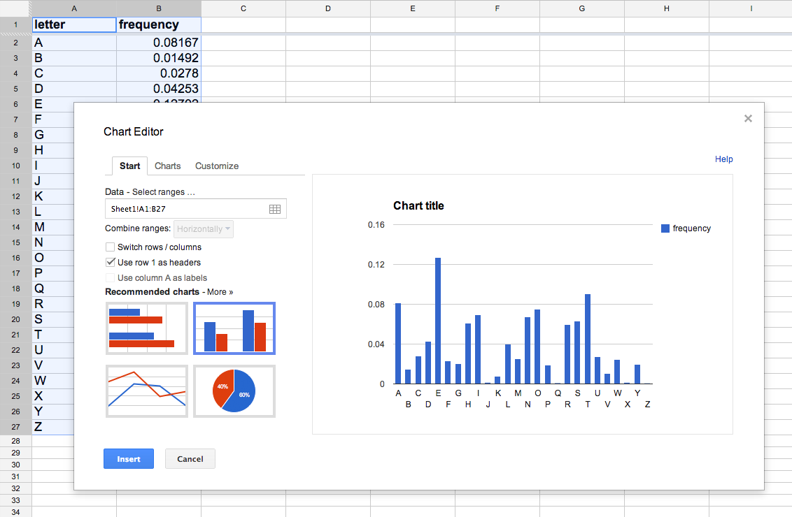
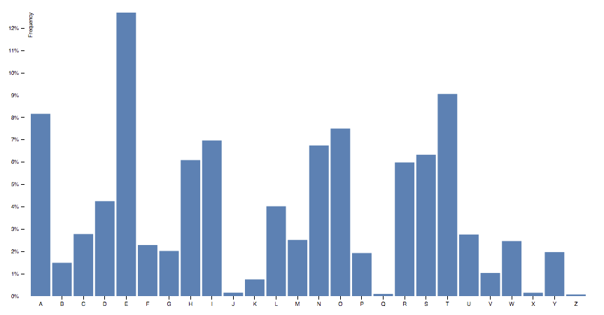

D3 + Backbone
=
Reusable Charts
May 9, 2013
Why reusable charts?
Abstraction
Modularity
Maintenance
Collaboration
Web frameworks & D3
Server-side framework + D3
Header
List
Item
D3 chart
Item
D3 chart
Client-side framework + D3
Header
ListView
ItemView
D3 chart
ItemView
D3 chart

Helpful methods to manipulate and query your data
"Backbone is a library, not a framework"
Plays well with others
(from the official FAQ)
Goal: Spreadsheet charts
Goal: JSON + Backbone + D3
var json = [
{"letter": "A", "frequency": 0.08167},
{"letter": "B", "frequency": 0.01492},
{"letter": "C", "frequency": 0.02780},
{"letter": "D", "frequency": 0.04253},
{"letter": "E", "frequency": 0.12702},
{"letter": "F", "frequency": 0.02288},
{"letter": "G", "frequency": 0.02022},
{"letter": "H", "frequency": 0.06094},
{"letter": "I", "frequency": 0.06973},
{"letter": "J", "frequency": 0.00153},
{"letter": "K", "frequency": 0.00747},
{"letter": "L", "frequency": 0.04025},
...
];
// Custom view (inherits Backbone.View)
var chart = new BarChart({
// Basic Backbone view options
el: $("#chart-container"),
collection: new Backbone.Collection(json),
// Custom chart options
xAttr: "letter",
yAttr: "frequency"
});
// D3 code abstracted away
chart.render();
Example: D3 bar chart
// http://bl.ocks.org/mbostock/3885304
var margin = {top: 20, right: 20, bottom: 30, left: 40},
width = 960 - margin.left - margin.right,
height = 500 - margin.top - margin.bottom;
var formatPercent = d3.format(".0%");
var x = d3.scale.ordinal()
.rangeRoundBands([0, width], .1);
var y = d3.scale.linear()
.range([height, 0]);
var xAxis = d3.svg.axis()
.scale(x)
.orient("bottom");
var yAxis = d3.svg.axis()
.scale(y)
.orient("left")
.tickFormat(formatPercent);
var svg = d3.select("body").append("svg")
.attr("width", width + margin.left + margin.right)
.attr("height", height + margin.top + margin.bottom)
.append("g")
.attr("transform", "translate(" + margin.left + "," + margin.top + ")");
d3.tsv("data.tsv", function(error, data) {
data.forEach(function(d) {
d.frequency = +d.frequency;
});
x.domain(data.map(function(d) { return d.letter; }));
y.domain([0, d3.max(data, function(d) { return d.frequency; })]);
svg.append("g")
.attr("class", "x axis")
.attr("transform", "translate(0," + height + ")")
.call(xAxis);
svg.append("g")
.attr("class", "y axis")
.call(yAxis)
.append("text")
.attr("transform", "rotate(-90)")
.attr("y", 6)
.attr("dy", ".71em")
.style("text-anchor", "end")
.text("Frequency");
svg.selectAll(".bar")
.data(data)
.enter().append("rect")
.attr("class", "bar")
.attr("x", function(d) { return x(d.letter); })
.attr("width", x.rangeBand())
.attr("y", function(d) { return y(d.frequency); })
.attr("height", function(d) { return height - y(d.frequency); });
});
var margin = {top: 20, right: 20, bottom: 30, left: 40}, width = 960 - margin.left - margin.right, height = 500 - margin.top - margin.bottom; Margins var formatPercent = d3.format(".0%"); var x = d3.scale.ordinal() .rangeRoundBands([0, width], .1); var y = d3.scale.linear() .range([height, 0]); Scales var xAxis = d3.svg.axis() .scale(x) .orient("bottom"); var yAxis = d3.svg.axis() .scale(y) .orient("left") .tickFormat(formatPercent); Axes var svg = d3.select("body").append("svg") .attr("width", width + margin.left + margin.right) .attr("height", height + margin.top + margin.bottom) .append("g") .attr("transform", "translate(" + margin.left + "," + margin.top + ")"); Margins d3.tsv("data.tsv", function(error, data) { data.forEach(function(d) { d.frequency = +d.frequency; }); Data x.domain(data.map(function(d) { return d.letter; })); y.domain([0, d3.max(data, function(d) { return d.frequency; })]); Scales svg.append("g") .attr("class", "x axis") .attr("transform", "translate(0," + height + ")") .call(xAxis); svg.append("g") .attr("class", "y axis") .call(yAxis) .append("text") .attr("transform", "rotate(-90)") .attr("y", 6) .attr("dy", ".71em") .style("text-anchor", "end") .text("Frequency"); Axes
D3 is declarative,
MV* is object-oriented
Encapsulation
Let's wrap D3 in Backbone
Dimensions and margin convention
var margin = {top: 20, right: 20, bottom: 30, left: 40},
width = 960 - margin.left - margin.right,
height = 500 - margin.top - margin.bottom;
var svg = d3.select("#chart").append("svg")
.attr("width", width + margin.left + margin.right)
.attr("height", height + margin.top + margin.bottom)
.append("g")
.attr("transform", "translate(" + margin.left + "," + margin.top + ")");
var ChartBase = Backbone.View.extend({
// Default options
defaults: {
margin: {top: 20, right: 20, bottom: 30, left: 40}
},
render: function() {
var margin = this.options.margin;
this.width = this.$el.width() - margin.left - margin.right;
this.height = this.$el.height() - margin.top - margin.bottom;
this.svg = d3.select(this.el).append("svg")
.attr("width", this.width + margin.left + margin.right)
.attr("height", this.height + margin.top + margin.bottom)
.append("g")
.attr("transform", "translate(" + margin.left + "," + margin.top + ")");
return this;
}
});
Base chart interface
var ChartBase = Backbone.View.extend({
defaults: {
xAttr: "x",
yAttr: "y",
margin: {...}
},
render: function() {
... // Append SVG element, set margins
this.scales = {
x: this.getXScale(),
y: this.getYScale()
};
this.renderAxes();
this.renderData();
return this;
}
});
Usage:
// Create chart object (BarChart inherits ChartBase)
var chart = new BarChart({
// Basic Backbone view options
el: $("#chart-container"),
collection: new Backbone.Collection(json),
// Override default options to match data
// (use default margins)
xAttr: "letter",
yAttr: "frequency"
});
// Sets margins, gets scales, renders data
chart.render();
Bar chart: Scales
var x = d3.scale.ordinal()
.rangeRoundBands([0, width], .1);
var y = d3.scale.linear()
.range([height, 0]);
...
x.domain(data.map(function(d) { return d.letter; }));
y.domain([0, d3.max(data, function(d) { return d.frequency; })]);
var BarChart = ChartBase.extend({
defaults: _.defaults({
barPadding: 0.1
}, ChartBase.prototype.defaults),
getXScale: function() {
var padding = this.options.barPadding;
return d3.scale.ordinal()
.rangeRoundBands([0, this.width], padding)
.domain(this.collection.pluck(this.options.xAttr));
},
getYScale: function() {
return d3.scale.linear()
.rangeRound([this.height, 0])
.domain([0, d3.max(this.collection.pluck(this.options.yAttr))]);
}
});
Bar chart: Axes
var xAxis = d3.svg.axis()
.scale(x)
.orient("bottom");
var yAxis = d3.svg.axis()
.scale(y)
.orient("left")
.tickFormat(d3.format(".0%"));
...
svg.append("g")
.attr("class", "x axis")
.attr("transform", "translate(0," + height + ")")
.call(xAxis);
svg.append("g")
.attr("class", "y axis")
.call(yAxis);
var BarChart = ChartBase.extend({
renderAxes: function() {
var xAxis = d3.svg.axis()
.scale(this.scales.x)
.orient("bottom");
var yAxis = d3.svg.axis()
.scale(this.scales.y)
.orient("left")
.tickFormat(d3.format(".0%"));
this.svg.append("g")
.attr("class", "x axis")
.attr("transform", "translate(0," + this.height + ")")
.call(xAxis);
this.svg.append("g")
.attr("class", "y axis")
.call(yAxis);
}
});
Bar chart: Rendering data
svg.selectAll(".bar")
.data(data)
.enter().append("rect")
.attr("class", "bar")
.attr("x", function(d) { return x(d.letter); })
.attr("width", x.rangeBand())
.attr("y", function(d) { return y(d.frequency); })
.attr("height", function(d) { return height - y(d.frequency); });
var BarChart = ChartBase.extend({
renderData: function() {
var chart = this,
x = this.scales.x,
y = this.scales.y;
this.svg.selectAll(".bar")
.data(this.mapData()) // { x: xAttr, y: yAttr }
.enter().append("rect")
.attr("class", "bar")
.attr("x", function(d) { return x(d.x); })
.attr("width", x.rangeBand())
.attr("y", function(d) { return y(d.y); })
.attr("height", function(d) { return chart.height - y(d.y); });
}
});
As basic as it gets
var chart = new BarChart({
el: $("#chart-container"),
collection: new Backbone.Collection(json),
xAttr: "letter",
yAttr: "frequency"
});
chart.render();

But wait, there's more
Getting started
biovisualize.github.io/d3visualization
Stay tuned!
We open source